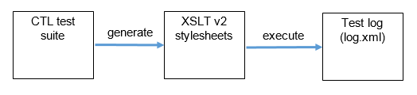
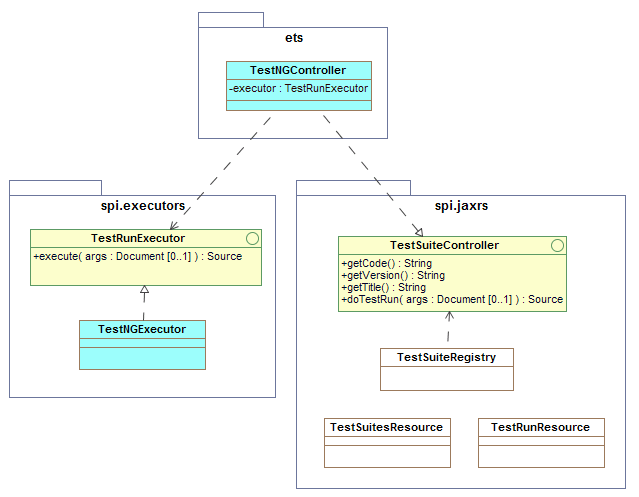

Architecture
The Test, Evaluation, And Measurement (TEAM) Engine is a test harness that executes test suites written using the OGC Compliance Test Language (CTL) or the TestNG framework. It is typically used to verify specification compliance and is the official test harness of the OGC Compliance Testing Program (CITE), where it is used to certify implementations of OGC and ISO geomatics standards in the 19100 series.
TEAM Engine is a Java application that provides command-line and web interfaces to execute test suites. A REST API is also available to run TestNG-based suites. A Java runtime environment is necessary (JDK 7 is recommended), and Apache Tomcat 7 is required to host the web application.
When a CTL test suite is executed, the source scripts are transformed into a collection of XSLT (v2.0) templates, one for each test (see Figure 1). See OGC document 06-126 for descriptions of CTL elements. A form may be presented to the user to collect test input parameters. The starting test is then called and the suite is executed using the Saxon XSLT processor. Test outputs are written to log files as the test run proceeds.
CTL Test Execution

A light-weight plugin mechanism is provided by the teamengine-spi module; it enables support for alternative test controllers that can be invoked using a REST-like API. The UML diagram in Figure 2 summarizes the essential design. A test controller must implement the TestSuiteController and TestRunExecutor interfaces.
Extensibility framework for alternative test runners

Executable test suites are automatically discovered using the Java ServiceLoader facility. A service provider is identified by placing the appropriate configuration file in the resource directory META-INF/services. The file contains the fully-qualified name of a class that implements the TestSuiteController interface.